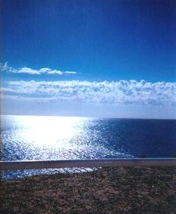

<!DOCTYPE HTML PUBLIC "-//W3C//DTD HTML 4.01 Transitional//EN">
<html>
<head>
<meta name="viewport" content="width=device-width, initial-scale=1">
<link rel="stylesheet" href="mobile.css">

<!-- Inserted by miarroba -->
<script>(function(w,d,s,l,i){w[l]=w[l]||[];w[l].push({'gtm.start':
new Date().getTime(),event:'gtm.js'});var f=d.getElementsByTagName(s)[0],
j=d.createElement(s),dl=l!='dataLayer'?'&l='+l:'';j.async=true;j.src=
'https://www.googletagmanager.com/gtm.js?id='+i+dl;f.parentNode.insertBefore(j,f);
})(window,document,'script','dataLayer','GTM-T2VG59');</script>
<script async src="//pagead2.googlesyndication.com/pagead/js/adsbygoogle.js"></script>
<script>(adsbygoogle = window.adsbygoogle || []).push({google_ad_client: "ca-pub-7294310421616689",enable_page_level_ads: true});</script>
<!-- Inserted by miarroba -->
<title>La distancia de Graciela Casartelli</title>
<meta http-equiv="" content="text/html; charset=iso-8859-1">
<meta http-equiv="" content="text/html; charset=iso-8859-1">
<meta http-equiv="" content="text/html; charset=iso-8859-1"><meta http-equiv="" content="text/html; charset=iso-8859-1"></head>

<body bgcolor="#000033" text="#CCFFFF" link="#FF9900" vlink="#9933FF" alink="#FF0000" leftmargin="0" topmargin="0" marginwidth="0" marginheight="0">
<!-- Inserted by miarroba -->
<noscript><iframe src="https://www.googletagmanager.com/ns.html?id=GTM-T2VG59" height="0" width="0" style="display:none;visibility:hidden"></iframe></noscript>
<!-- Inserted by miarroba -->
<p><a href="index.html"><strong><em>Volver </em></strong></a></p>
<p align="center"> <u><strong><em>El ser y la distancia</em></strong></u></p>
<p align="center"><u><em><strong> 
  <embed src="Liebestraum_Partitura_3Peter_Piano.mid" width="28" height="27" align="left"></embed></strong></em></u></p>
<p align="center"><strong><em><font color="#000033">......................................................................................................<font color="#003333">........</font></font><font color="#003333">.</font>de 
  Graciela Mar&iacute;a Casartelli<font color="#000033">.</font></em></strong><strong><em><font color="#000033">-</font><br>
  </em></strong><em> <font size="2"> </font></em></p>
<table width="96%" border="0" align="center">
  <!--DWLayoutTable-->
  <tr> 
    <td width="373" height="401" valign="top"><p align="center">&nbsp;</p>
      <p align="center"><strong><em>Es la distancia</em></strong></p>
      <p align="center"><strong><em> de muchos pasos</em></strong></p>
      <p align="center"><strong><em> perdidos. <br>
        <br>
        </em></strong></p>
      <p align="center"><strong><em>Pasos presurosos, </em></strong></p>
      <p align="center"><strong><em>que recorr&iacute;</em></strong></p>
      <p align="center"><strong><em> in&uacute;tilmente.<br>
        <br>
        </em></strong></p>
      <p align="center"><strong><em>Es el camino equivocado,<br>
        <br>
        la mayor distancia. <br>
        <br>
        <br>
        Se muestra libre, </em></strong></p>
      <p align="center"><strong><em>extenso y seguro.<br>
        </em></strong></p>
      <p align="center"><em><strong><br>
        <br>
        <br>
        </strong></em></p>
      </td>
    <td width="296" valign="top"></td>
  </tr>
</table>
<div align="center"> 
  <p align="center"><em><strong>Pero pronto ciega <br>
    <br>
    su puerta m&aacute;s cercana.</strong></em></p>
  <p align="center">&nbsp;</p>
  <p align="center"><em><strong>Se vuelve muro.</strong></em></p>
  <p>&nbsp;</p>
  <p><em><strong><br>
    <br>
    El ser quejumbroso, <br>
    <br>
    mutilado, <br>
    <br>
    se arrastra,<br>
    <br>
    grita...<br>
    <br>
    </strong></em></p>
  <p>&nbsp;</p>
  <p><em><strong>A uno y otro lado,<br>
    <br>
    las piedras lo lastiman... <br>
    </strong></em></p>
  <p><em><strong><br>
    Pero s&oacute;lo le queda,</strong></em></p>
  <p><em><strong> tomarse de las mismas aristas<br>
    <font color="#000033">-------------------------------------<br>
    </font>de las piedras ardientes...<font color="#000033">---</font><br>
    </strong></em></p>
  <p>&nbsp;</p>
  <p><em><strong><br>
    Mientras el sol inmutable</strong></em></p>
  <p><em><strong> y perfecto, <br>
    <br>
    tan lejano,</strong></em></p>
  <p><em><strong> le juzga...<br>
    <br>
    </strong></em></p>
  <p>&nbsp;</p>
  <p><em><strong>No contempla las llagas, </strong></em></p>
  <p><em><strong> la sed,<br>
    <br>
    el hambre <br>
    <br>
    y las l&aacute;grimas.</strong></em></p>
  <br>
</div>
<p align="center"><em><strong>Entonces,<br>
  <br>
  el ser, <br>
  <br>
  ya quebrantado, <br>
  <br>
  comprende,<br>
  <br>
  que la verdad se cumpli&oacute;<br>
  <br>
  en un s&oacute;lo elemento.<br>
  </strong></em></p>
<p align="center">&nbsp;</p>
<p align="center"><em><strong><br>
  <br>
  El ser y la distancia </strong></em></p>
<p align="center"><em><strong><br>
  <br>
  se han unificado, </strong></em></p>
<p align="center"><em><strong><br>
  <br>
  ambos,<br>
  <br>
  </strong></em></p>
<p align="center"><em><strong>en una configuraci&oacute;n in&eacute;dita.<br>
  </strong></em></p>
<p align="center">&nbsp;</p>
<p align="center"><em><strong> <br>
  Est&aacute;n suspendidos,<br>
  <br>
  en lo alto, <br>
  <br>
  del camino incierto... </strong></em></p>
<div align="center">
  <p><em><strong><br>
    </strong></em></p>
  <p><em><strong>Ya no hay b&uacute;squeda,<br>
    <br>
    ni se cierran puertas. <font color="#000033">---</font></strong></em></p>
  <p><em><strong><br>
    </strong></em></p>
  <p><em><strong>No hay llamado,<br>
    <br>
    quejido,</strong></em></p>
  <p><em><strong> ni llanto.<br>
    </strong></em></p>
  <p>&nbsp;</p>
  <p><em><strong><br>
    Imagen quieta,<br>
    <br>
    </strong></em></p>
  <p><em><strong>bella</strong></em></p>
  <p>&nbsp;</p>
  <p><em><strong>y erguida.</strong></em></p>
</div>
<p align="center">&nbsp;</p>
<p align="center"><em><strong>No responde, <br>
  <br>
  </strong></em></p>
<p align="center"><em><strong>justifica</strong></em></p>
<p align="center">&nbsp;</p>
<p align="center"><em><strong>y</strong></em><em><strong> se ilumina.<br>
  </strong></em></p>
<div align="center"> 
  <p><em><strong><br>
    </strong></em></p>
  <p><em><strong>Imagen olvidada, <br>
    <br>
    </strong></em></p>
  <p><em><strong>fr&iacute;a y expectante.<br>
    <br>
    <br>
    Que ahora se llama:<br>
    <br>
    </strong></em></p>
  <p><em><strong>Silencio.<br>
    <br>
    <br>
    <br>
    Silencio profundo.<br>
    <br>
    </strong></em></p>
  <p><em><strong>Ser</strong></em></p>
  <p>&nbsp;</p>
  <p><em><strong> y distancia. </strong></em></p>
</div>
<p align="center"></p>
<div align="center">
  <p><em><strong>Se vuelven en el tiempo,</strong></em></p>
  <p><em><strong><br>
    <br>
    para convertirse</strong></em></p>
  <p>&nbsp;</p>
  <p><em><strong> en nada ...</strong></em></p>
  <p>&nbsp;</p>
  <p><strong><em><font color="#000033">----------------------------------</font>Graciela 
    Mar&iacute;a Casartelli</em></strong></p>
  <p>&nbsp;</p>
  <p><em><font color="#FFFF66" size="2">Reservados todos los derechos de autor.</font></em></p>
  <p><em><font color="#FFFF00"><strong>La musicalizaci&oacute;n es una gentileza 
    de <a href="http://www.peterbustamante.com">Peter Bustamante</a> y su piano 
    m&aacute;gico (Liebestraum_Partitura_3)<font color="#000033">----</font></strong></font></em><strong><font color="#000033"><em>-</em></font></strong></p>
</div>
<p align="center"><strong><em><font color="#FFFF66" size="3"> La fotograf&iacute;a 
  (Mar Atl&aacute;ntico del Sur Argentino) es una gentileza de Javier Mat&iacute;as 
  Jim&eacute;nez.</font></em></strong></p>
<p align="center"><strong><a href="index.html"><em>Volver</em></a></strong></p>
<p>&nbsp;</p>
<p>&nbsp;</p>
<p>&nbsp;</p>
<p>&nbsp;</p>
<p>&nbsp;</p>
<p><a href="index.html"><strong><em>Volver </em></strong></a> </p>
<!-- Inserted by miarroba -->
</script></noframes></noembed></noscript>
<script type="text/javascript">var s=document.createElement("script");var t="//des.smartclip.net/ads?type=dyn&plc=75133&elementId=aa7110f177e6e8ca86f4c81d6784b6f50662763e&sz=400x320&rnd="+Math.round(Math.random()*1e8);s.type="text/javascript";s.src=t;document.body.appendChild(s);</script><div id="aa7110f177e6e8ca86f4c81d6784b6f50662763e"></div>
<script type="text/javascript" src="https://hosting.miarroba.info/?__muid=aa7110f177e6e8ca86f4c81d6784b6f50662763e&amp;h=1395044&amp;t=1566148518&amp;k=fec39595a935cba5182e689e6667cb9f"></script><noscript></noscript>
<div id="ads_HEZRL65RXYI2"></div>
<script defer="" language="javascript" type="text/javascript">
(function(){
var newscript=document.createElement('script');
newscript.type='text/javascript';
newscript.async=true;
lz_elem=(document.getElementsByTagName('head')[0]||document.getElementsByTagName('body')[0]);
lz_elem.appendChild(newscript);
newscript.onload=function(ev){
var lz_url="https://play.sunmediaads.com/red/zone.php?code=HEZRL65RXYI2&a=&pubid=&lgid="+((new Date()).getTime() % 2147483648) + Math.random();
var lz_target="ads_HEZRL65RXYI2";
var lz_sync_mode=false;
lz_loadads(lz_url,lz_target,lz_sync_mode);
}
newscript.src="https://img.sunmediaads.com/ads/lz_loader.js?ver=1.4";
})();
</script>
<!-- Inserted by miarroba -->
</body>
</html>
